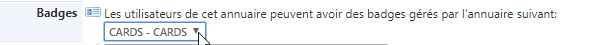
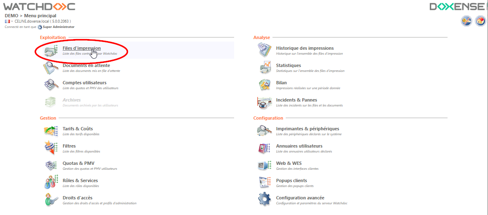
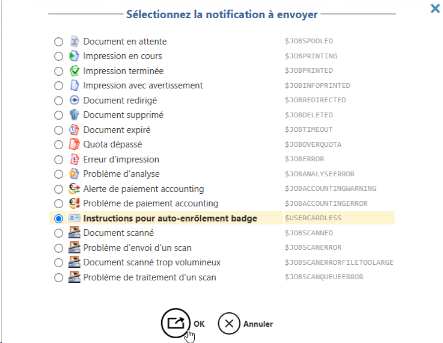
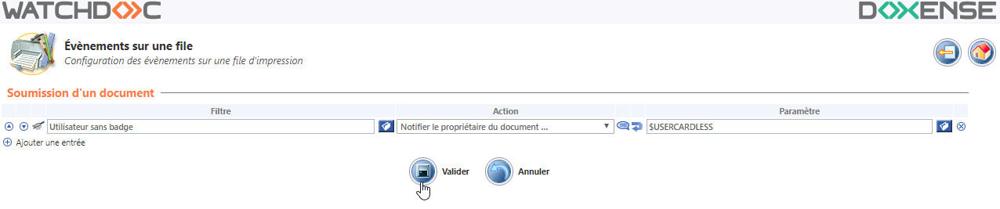

Notifications - Cas d'usage : notifier un utilisateur sans badge
Principe
Lorsqu'un utilisateur ne disposant pas de badge lance une impression, Watchdoc est en mesure de lui envoyer une notification par e-mail pour l'inviter à s'équiper d'un badge et à procéder à son enrôlement.
De plus, lors de l'enrôlement du badge, une autre notification permet à l'utilisateur d'en valider le succès.
Etapes
L'activation de la notification des utilisateurs repose sur l'exploitation d'une règle permettant de distinguer les utilisateurs qui ne possèdent pas de badges de ceux qui en possèdent.
Par ailleurs, elle exploite un filtre prédéfini (et non-modifiable) intitulé "Utilisateur sans badge".
Pour activer cette fonctionnalité, il convient donc :
-
de paramétrer l'annuaire de sorte qu'il distingue les utilisateurs non-dotés de badges ;
-
d'appliquer sur la file une règle déclenchant l'envoi de la notification dès la détection des utilisateurs non dotés de badges.
Procédure
Activer la détection des utilisateurs sans badges dans l'annuaire
Pour activer la détection des utilisateurs sans badges dans l'annuaire :
-
depuis le Menu Principal de Watchdoc®, section Configuration, cliquez surAnnuaires utilisateurs ;
-
dans l'interface Annuaires utilisateurs, cliquez sur le bouton
 de l'annuaire dans lequel sont enregistrés les utilisateurs ;
de l'annuaire dans lequel sont enregistrés les utilisateurs ; -
dans l'interface Configuration d'un annuaire utilisateur, section Badges, sélectionnez dans la liste déroulante l'annuaire dans lequel sont enregistrés les badges de vos utilisateurs.
Par défaut dans Watchdoc®, les badges sont enregistrés dans l'annuaire CARDS ;
-
cliquez sur le bouton
 pour valider la configuration de votre annuaire.
pour valider la configuration de votre annuaire.
Configurer la file d'impression
Pour appliquer la règle d'envoi de notification sur la file d'impression :
-
depuis le Menu Principal de Watchdoc®, section Exploitation, cliquez sur Files d'impression ;

-
dans la liste Files d'impression, cliquez sur le bouton de la file à configurer .
Vous accédez à l'interface de présentation générale de la file.
-
Dans l'interface de présentation de la file, cliquez sur Règles
 :
:
-
Dans l'interface de gestion des règles, cliquez sur le bouton
de la file que vous paramétrez ; -
dans l'interface Evénements sur la file, section Soumission d'un document, paramétrez la règle suivante :
-
Filtre : parmi les filtres prédéfinis, sélectionnez le filtre "Utilisateurs sans badges" ($USERHASNOCARD) ;
-
Action : dans la liste, sélectionnez l'action "Notifier le propriétaire du document" ;
-
Paramètres : optez pour le paramètre "Instructions pour auto-enrôlement badge", puis cliquez sur OK pour valider votre choix.

-
-
cliquez sur le bouton
pour valider la règle sur la file ; 
-
testez l'impression à partir du compte d'un utilisateur qui ne possède pas de badge et vérifiez qu'il reçoit la notification suivante :
Vous avez choisi une file d'impression permettant la récupération de vos documents sur un copieur équipé d'un lecteur de badge, mais nous n'avons pas trouvé de badge associé à votre compte.
Si vous n'avez pas encore enregistré votre badge :
1. déplacez-vous devant un copieur équipé d'un lecteur de badge ;
2. placez votre badge devant le lecteur, et suivez les instructions affichées à l'écran ;
3. si nécessaire, saisissez votre code (personnel à garder secret!).
Une fois fait, vous devriez avoir accès à vos documents sur n'importe quel autre périphérique en utilisant ce badge, et ne devriez plus avoir besoin de ce code.
Si vous avez déjà enregistré votre badge récemment (dans la journée), veuillez ignorer ce message.
Si vous avez déjà utilisé votre badge par le passé, et que vous recevez ce message, naviguez vers le lien suivant pour consulter votre compte, et vérifiez si votre badge est toujours référencé, et n'a pas expiré.
Pour toute question, vous pouvez également contacter votre administrateur (e-mail de l'administrateur).